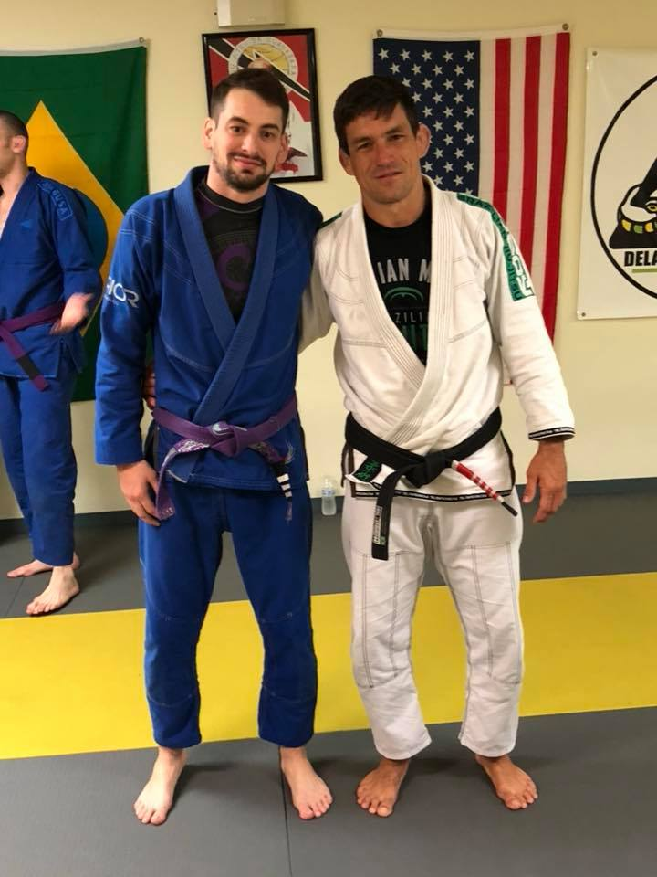

About Me

Hello, my name is Stefan Kashner. I currently reside where I was born and raised, in Aston, Pennsylvania. I grew up as a die hard sports fan and tech junkie that spent most of my time running around a field or playing games infront of a monitor. As I grew older, I slowly transitioned from watching and/or participating in mainstream sports to training in mixed-martial arts, specifically Brazilian Jiu-Jitsu. This art became the most addicting hobby I've ever experienced, infact I wouldn't even call it a hobby, it's more of a lifestyle. I have been training now for seven years and teaching for two years. While I may have made a change in my sports preferences, my tech habits have not changed as much. I still spend quite a bit of time infront of that monitor, but now instead of playing games and having fun, I'm working to build a new career in web development. I've always had a passion to work with computers, but never took the necessary steps to make it happen, until now. I recently left my career as an HVAC technician to focus on learning web development at Penn University in Philadelphia.